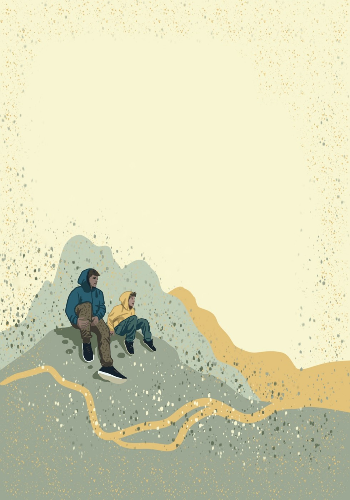
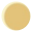
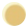
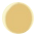
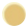
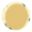
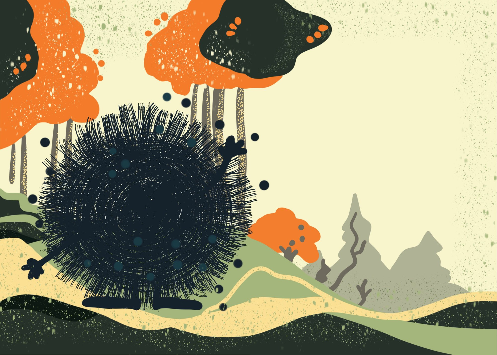
Mina olen Lein. Ma olen siin sinuga, sest sa kaotasid endale lähedase inimese.
Ma tean, et tundun sulle alguses võõras ja kindlasti ka hirmutav. Aga kui sa õpid mind tundma, siis näed, et ma aitan sind sinu raskel ajal ja võin olla sulle isegi sõbraks.
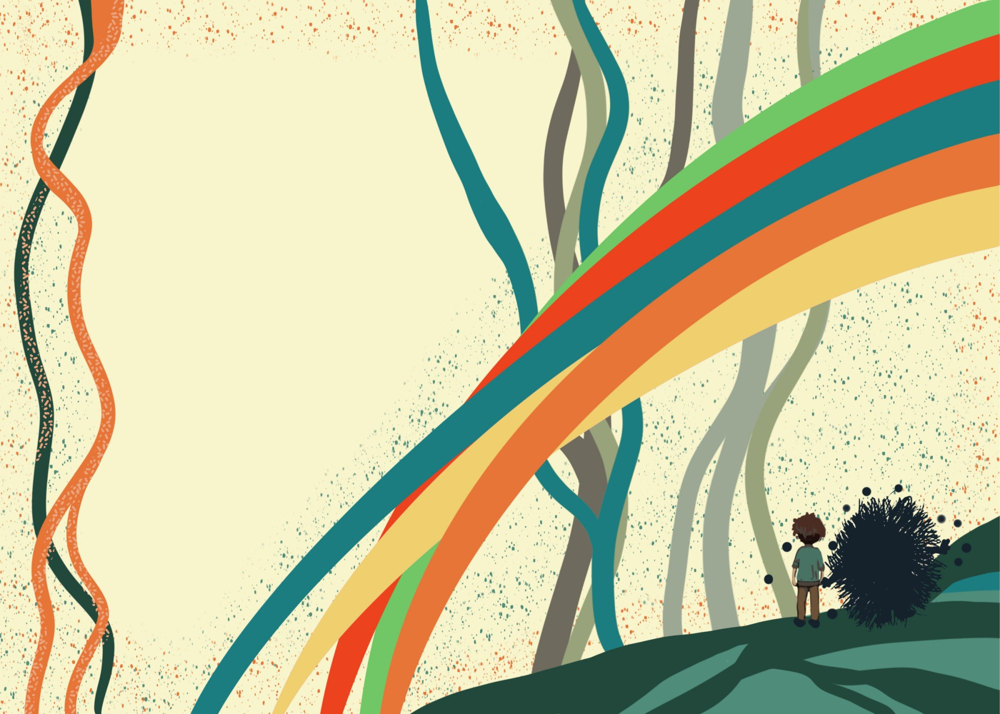
Ma toon endaga kaasa palju tundeid. Nagu vikerkaares on värve, on tundeid palju ja erinevaid.
Kõik, mida sa tunned on õige. Ei ole valesid või mittesobivaid tundeid.
Kurb
Vihane
Segaduses
Kuri
Hirmunud
Pettunud
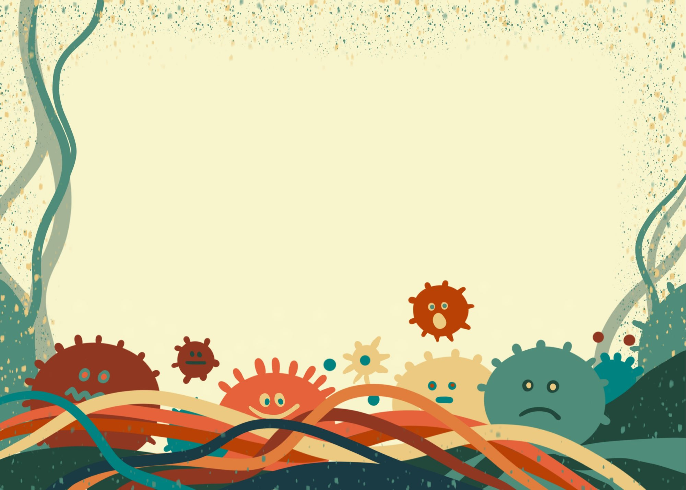
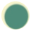
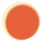
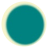
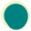
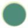
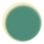
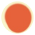
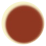
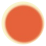
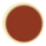
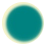
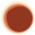
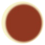
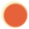
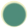
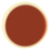
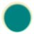
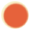
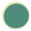
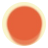
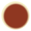
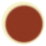
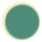
Minuga koos võid sa tunda kurbust, viha või ka palju tundeid koos, mis ajab segadusse.
Ja järgmisel hetkel võid tunda end rahuliku ja isegi rõõmsana.
Kõik tunded on õiged.
Nad aitavad su südamel aru saada sellest, mis sinuga toimub.
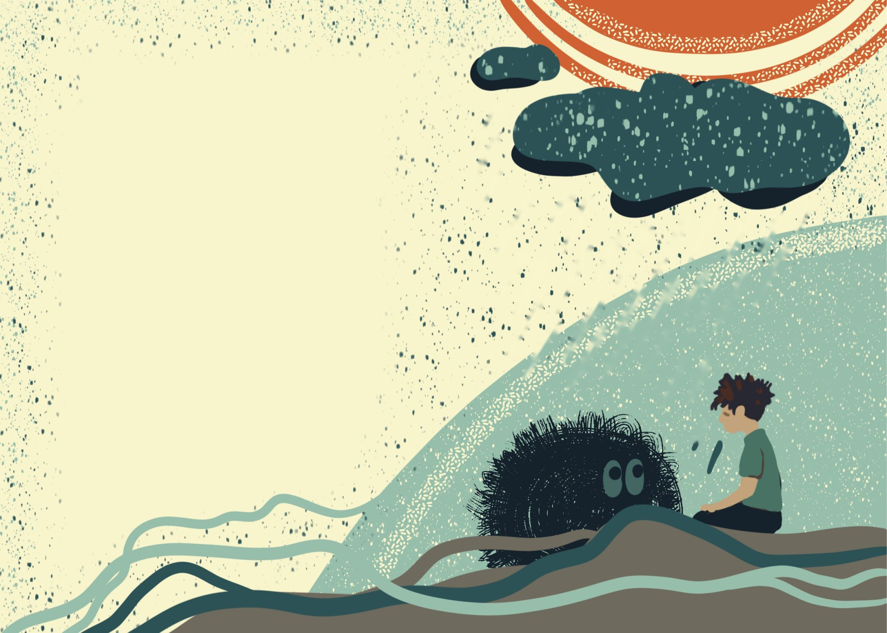
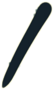
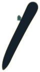
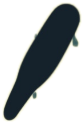
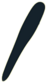
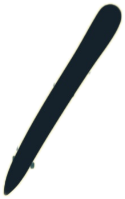
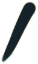
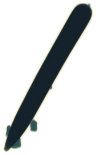
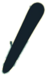
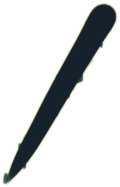
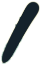
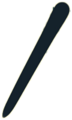
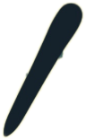
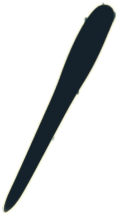
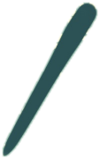
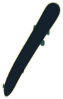
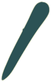
Vahel ajan ma sind ja sinu lähedasi nutma.
Nutmine toob kurbuse sinust välja ja teeb nii ruumi teistele tunnetele, mida on vaja tunda.
Nutmine on kasulik ja sa ei pea kartma , et sinu kurbus ka teisi nutma ajab. Ka nende kurbus tahab välja saada, et see üle läheks.
Ma toon endaga kaasa ka palju mõtteid.
Mõtted on nagu lained meres. Neid on nii palju, nad tulevad muudkui üksteise järel ja võivad olla väga väsitavad.
Miks nii juhtus?
Kas ma saan tema toa nüüd endale?
Kus sa nüüd oled?
Mis nüüd edasi saab?
Mõned mõtted muudavad sind kurvaks.
Mõned mõtted võivad sind üllatada ja tunduda valed ja piinlikud.
Kõik mõtted on õiged ja sa ei pea neid tegelikult kartma.
Nad aitavad sul uues olukorras kohaneda.
Mida “surnud“ üldse tähendab?
Kas mina tegin midagi valesti, et nii juhtus?
Ma kardan teda unustada
Vahel ma võin muuta sind lausa haigeks ja sa tunned end väga halvasti.
Su süda võib hakata väga kiiresti lööma ja sulle tundub, et kohe juhtub midagi väga halba.
Kui nii juhtub, siis mul on üks mäng, mis aitab.
See mäng käib nii:
Kui sa end väga halvasti tunned, siis proovi leida enda ümber üles kõik asjad, mis algavad sinu nime esimese tähega.
Keera järgmine leht ja proovime seda mängu mängida, et sa oleks valmis kui sul seda vaja peaks minema.
Millise tähega sinu nimi algab?
Väga hea!
Vaata nüüd enda ümber ringi, kus iganes sa oled ja proovi leida asju, mis algavad selle tähega.
Ma ootan kuni sa seda teed.
Kas see mäng oli natuke raske?
Peabki natuke raske olema.
See mäng aitab sul mõtted natukeseks mujale viia ja rahustab sinu keha. Nii hakkab kergem ja tunne läheb paremaks.
On hea kui sa räägid minust oma sõprade ja perega.
Kuigi teised ei näe sinu leina nii nagu sina, tunnevad nad, et midagi on teistmoodi.
Kui sa jagad nendega oma mõtteid ja tundeid, saavad nad sinust paremini aru ja oskavad sulle abiks olla.
On hea rääkida inimesest, kelle sa kaotasid. See aitab sinul ja teistel teda mäletada.
Sa saad temaga oma mõtetes alati koos olla ja rääkida.
Teie vahel on eriline side, mis ei katke ja jääb alati sinuga.
Seda ühendust hoiab armastus ja hoolimine.
Ja tore on see, et kui sa teed midagi, mida armastad, siis sa tunned seda ühendust.
Aja jooksul ma muutun.
Nii nagu sina muutud ja kasvad, muutun ka mina.
Aga on üks erinevus. Kui sina kasvad suuremaks, siis mina hoopis jään väiksemaks ja vaiksemaks.
Ühel päeval märkad sa, et ma ei oma enam nii suurt osa sinu elus.
Sinu elus on siis palju uusi vahvaid asju ja mina ei ole enam sinuga pidevalt koos.
Aga isegi tulevikus võin ma sind ootamatult üllatada. Hetkedel, mil sa mind kõige vähem ootad.
Kui ma siis ootamatult välja ilmun, tuleta endale meelde, et sa juba tead mind.
Ma olen nagu sõber, kes vahel on jonnakalt kohal ka siis kui sul on hoopis muud plaanid.
Nüüd sa tead kes ma olen ja miks ma sinu juurde tulin.
Sa ei pea mind enam kartma.
Ma olen sinu Lein.
Ma toon sinu ellu palju uusi kogemusi ja kõik nad ei ole üldse meeldivad. Aga nii ma aitan sul kaotusega hakkama saada ja kasvada. Et sa leiaks uuesti oma elurõõmu.